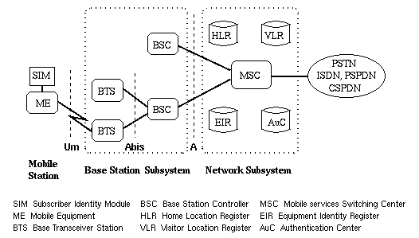
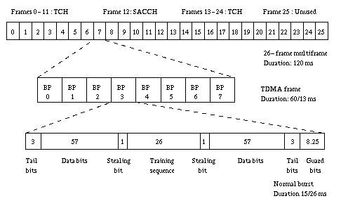

| GSM | DCS | |
| Bande de fréquence | 890-915 Mhz 935-960 MHz | 1710-1785 Mhz 1805-1880 MHz |
| Nombre d'intervalles de temps par trame TDMA | 8 | 8 | Ecart duplex | 45 MHZ | 95 MHz |
| Rapidité de modulation | 271 kbit/s | 271 kbit/s |
| Débit de la parole | 13 kbit/s (5,6 kbit/s) | 13 kbit/s (5,6 kbit/s) |
| Débit maximale de données | 12 kbit/s | 12 kbit/s |
| Accès Multiple | Multiplexage fréquentiel et temporel et duplexage fréquentiel | Multiplexage fréquentiel et temporel et duplexage fréquentiel |
| Rayon des cellules | 0,3 à 30 km | 0,1 à 4 km |
| Puissance des terminaux | 2 à 8 W | 0,25 à 1 W |
L'interface radio, qui représente le maillon faible de la chaîne de transmission reliant un utilisateur mobile au réseau, a été particulièrement étudiée. Tout au long de la chaîne, des traitements permettent l'établissement d'un lien sur un canal perturbé. Le système GSM est plus résistant aux brouillages et aux évanouissement que les systèmes analogiques ou sans cordon. Ceci exige une transmission numérique: les dispositifs de codage de canal permettent d'abaisser le seuil du rapport signal sur bruit de fonctionnement. La redondance introduite double le débit transmis. Le faible débit de sortie du codec de parole rend tolérable cet accroissement. Dans un système radiomobile, le lien entre le terminal et le réseau est fluctuant du fait de l'instabilité du canal radio et du déplacement du terminal. Un architecture spécifique est définie sur l'interface radio afin de permettre à chaque station mobile de surveiller constamment son environnement. Au sein du sous-système radio, elle réutilise en les adaptant des protocoles développés dans le cadre des réseaux fixes.

| Acronyme | Sens | |
| Parole plein-débit | TCH/FS | BS<->MS |
| Parole demi-débit | TCH/HS | BS<->MS |
| Données à 9,6 kbit/s plein-débit | TCH/F 9,6 | BS<->MS |
| Données à 4,8 kbit/s plein-débit | TCH/F4,8 | BS<->MS |
| Données à 9,6 kbit/s demi-débit | TCH/H4,8 | BS<->MS |
| Données à 2,4 kbit/s plein-débit | TCH/F2,4 | BS<->MS |
| Données à 2,4 kbit/s demi-débit | TCH/H2,4 | BS<->MS |
Le multiplexage fréquentiel divise les deux plages de fréquences correspondant aux liaisons montantes et descendantes en 124 canaux de 200 kHz. On obtient ainsi 124 voies de communication duplex en parallèle.
Le multiplexage temporel partage l'usage d'une voie de transmission entre 8 communications différentes. Si un canal de transmission offre un débit D par unité de temps, les différentes communications seront transmises avec un débit D/8. Chaque communication occupe un intervalle de temps de 577 ms, l'ensemble des 8 intervalles de temps forment l'unité temporelle de base ou trame. Dans le cas du GSM, une trame dure 4,615 ms. En téléphonie, le débit moyen est faible. En effet les silences sont nombreux au cours d'une conversation, de plus un seul locuteur est actif à un instant donné. Le multiplexage temporel permet d'optimiser l'utilisation de la capacité de transmission d'une voie.

FIGURE : Organisation des unités temporelles, des trames TDMA et des Multitrames
La norme GSM définie précisément la structure d'une trame. Elle se divise en huit intervalles de temps d'une durée de 577 ms et chaque intervalle constitue un canal de communication dans lequel un message élémentaire appelé paquet est transmis périodiquement. Ce paquet est un ensemble structuré de bits, il est porteur des informations utiles précédées et suivies par une zone " TB " qui marquent le début et la fin de la partie utile du paquet. La queue est une période de garde " GP " qui sert à compenser la durée de transmission, variable pour un récepteur d'un paquet à l'autre du fait de la mobilité de l'émetteur et du récepteur.
La norme GSM définit trois types de paquets: